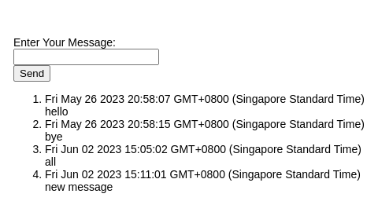

50.003 - Express.js Frontend View and JQuery
Learning Outcomes
By the end of this unit, you should be able to
- Develop web app frontend using HTML Form
- Develop web app frontend using AJAX
This is unit, we study the different approaches of developing frontend components of a web application.
Recall that the View modules in a MVC model are dedicated to handle user inputs and renders the requested results.
View
Let's take our echo app as example, when we visit
https://localhost:3000/
The web app is triggering the following route in the routes/index.js.
/* GET home page. */
router.get('/', function(req, res, next) {
res.render('index', { title: 'Express' });
});
In the above we call res.render() which takes two parameters.
1. index, the view template, (./views/index.ejs).
2. An object { title: 'Express'}.
it passes the object to the view template
<!DOCTYPE html>
<html>
<head>
<title><%= title %></title>
<link rel='stylesheet' href='/stylesheets/style.css' />
</head>
<body>
<h1><%= title %></h1>
<p>Welcome to <%= title %></p>
</body>
</html>
Note that in the view template, we are using mostly HTML syntax, except that we
have some special tagged element <%= title %> which are the place-holders for the data to displayed. When res.render() is called with the view template and the object, the value associated with title, i.e. Express is being substituted to the tagged elements.
As result, the following will be rendered on the client browser,
<!DOCTYPE html>
<html>
<head>
<title>Express</title>
<link rel='stylesheet' href='/stylesheets/style.css' />
</head>
<body>
<h1>Express</h1>
<p>Welcome to Express</p>
</body>
</html>
Exercise
Change the value Express in the object to Echo App, restart the app and see the change.
Adding View to the Echo App
Let's create a template in views/ named echo.ejs, with the following
<!DOCTYPE html>
<html>
<head>
<title><%= title %></title>
<link rel='stylesheet' href='/stylesheets/style.css' />
</head>
<body>
<div>Enter Your Message:</div>
<div><input id="message" type="text"/> </div>
<div><input id="sendButton" type="button" value="Send"/></div>
</body>
</html>
Next we modify the routes/echo.js by inserting the following code snippet before the export statement.
router.get('/', function(req, res, next) {
res.render(`echo`, { 'title': "Echo App"});
})
Now if we launch our web app, and open the link
http://localhost:3000/echo/
we should see a page with a text label, a text field input and a button. But clicking on the button renders no effect.
There are at least two ways to add the effect of clicking the Send button and sending the message to the database.
Approach 1: using a form
For now let's go with the approach which involves a form
Duplicate the template echo.ejs into another file echoform.ejs, with the following adjustment
<!DOCTYPE html>
<html>
<head>
<title><%= title %></title>
<link rel='stylesheet' href='/stylesheets/style.css' />
</head>
<body>
<form action="/echo/submit" method="post">
<div>Enter Your Message:</div>
<div><input id="message" name="message" type="text"/> </div>
<div><input type="submit" value="Send"/></div>
</form>
<ol>
<% for (var i = 0; i < messages.length; i++) { %>
<li>
<div><%=messages[i].time%></div><div><%=messages[i].msg%></div>
</li>
<% } %>
</ol>
</body>
</html>
First we wrapped the 3 div elements in the body with a form tag. A HTML form capture the inputs from its child elements and converts into a form, where each input value is assocated with a name. Thus in the input text element, we added a name attribute message. For the button, we changed its type from button to submit to indicate that when
this button is clicked the form should be submitted. The action attribute of the form element indicate the destination of the end point, the method is HTTP POST.
Below the form, we have an HTML order list element ol, whose content will be generated via the embedded javscript template language. In this case, we expect that the
route handler will return an object containing a title and a messages list. By using a for loop, we expand the list of messages into
a sequence of list items li. Within each li element, we render the message's time and text.
Next we update the routes/echo.js as follows
const express = require('express'); // existing
const model = require('../models/message.js'); // existing
var router = express.Router(); // existing
/* GET echo listing. */
router.get('/:msg', async function(req, res, next) { // existing
const msg = req.params.msg;
const message = new model.Message(msg, new Date());
await model.insertMany([message]);
const messages = await model.all();
console.log(messages);
res.send(`${JSON.stringify(messages)}`);
});
router.get('/', async function(req, res, next) { // updated
const messages = await model.all();
res.render(`echoform`, { 'title': "Echo App",'messages': messages});
});
router.post('/submit', async function(req, res, next) { // new
const msg = req.body.message;
const message = new model.Message(msg, new Date());
await model.insertMany([message]);
const messages = await model.all();
console.log(messages);
res.render(`echoform`, { 'title': "Echo App", 'messages': messages});
});
module.exports = router; // existing
In the second routing rule, we listen to the local URL path /echo/, and retrieve all the messags, and render the result in the echoform template. This is to handle
user accessing
http://localhost:3000/echo
In the third routing rule, we liste ot the local URL path /echo/submit over HTTP POST, we retrieve the message (via element name attribute = "message"), create a new message, retrieve all the messages from the model and render the result in the echoform template.
Being different from HTTP GET, parameters of the requests submited via HTTP POST are packaged into the body of the request instead of being exposed as part of the URL. Technically speaking, users can't access a HTTP POST endpoint directly via the browser URL links or navigation bar.
To allow the form data embeded in the HTTP POST request to be parsed, we add the following to the app.js
const bodyParser = require('body-parser'); // new
app.use(bodyParser.urlencoded({ extended: true })); // new
app.use('/', indexRouter); // existing
app.use('/users', usersRouter) // existing

Approach 2 Using AJAX
The advantage of Approach 1 is that it is relatively simple to implement and codes are pretty structured.
One issue with Approach 1 is that the page echoform is reloaded each time we submit a new message.
This is not a big deal when the page is simple with little content. It affects the user experience as the content of the page get complex and a single click would cause the entire page to refresh.
To address this issue, we could use AJAX. The idea of AJAX is to divide the view template HTML into sub regions, when a user input is detected, we use the client side javascript to update the affected sub region.
We re-start from the point of echo.ejs template again. We copy and modify its content into a new template echoajax.ejs
<!DOCTYPE html>
<html>
<head>
<title><%= title %></title>
<script src='/javascripts/echoajaxclient.js'> </script>
<link rel='stylesheet' href='/stylesheets/style.css' />
</head>
<body>
<div>Enter Your Message:</div>
<div><input id="message" type="text"/> </div>
<div><input id="sendButton" type="button" value="Send"/></div>
<ol id="messagesregion">
</ol>
</body>
</html>
Note that only change we introduce is the div element with id messagesregion and the inclusion of the
client side javascript echoajaxclient.
Next we add echoajaxclient.js file into the subfolder public/javascripts/.
// update the ol with id = "messagesregion" in the curent page
// input: json contains list of messages
// output : none
function update_messagesregion(json) {
var html = "";
for (let i = 0; i < json.length; i++) {
const message = json[i];
html += `<li><div>${message.time}</div><div>${message.msg}</div></li>`;
}
var region = document.getElementById("messagesregion");
region.innerHTML = html;
}
function handleSendButtonClick() {
var message = document.getElementById("message");
var xhr = new XMLHttpRequest();
xhr.onreadystatechange = function() {
if (xhr.readyState == 4) {
var res = xhr.responseText;
var json = JSON.parse(res);
update_messagesregion(json);
}
};
// constructing a HTTP POST request
var params = `msg=${message.value}`;
xhr.open('POST', `/echo/submit/`, true);
//Send the proper header information along with the request
xhr.setRequestHeader('Content-type', 'application/x-www-form-urlencoded');
xhr.send(params);
}
// set up the event listener for the send button
// call /echo/all to get the current list of messages
function run() {
var sendButton = document.getElementById("sendButton");
sendButton.addEventListener("click", handleSendButtonClick);
var xhr = new XMLHttpRequest();
xhr.onreadystatechange = function () {
if (xhr.readyState == 4) {
var res = xhr.responseText;
var json = JSON.parse(res);
update_messagesregion(json);
}
}
xhr.open('GET', `/echo/all`);
xhr.send();
}
document.addEventListener( "DOMContentLoaded", run);
In the above client side javascript, we call function run when the HTML document is fully rendered.
Function run performs two tasks
- register a call back function
handleSendButtonClickto the event ofsendButtonbeing click. - make an API call to the
/echo/allend point to get the list of messages and render it in themessagesregionordered list.
Function handleSendButtonClick is triggered when the button is clicked, it retrieves the value from the input text box and
submit an HTTP POST request to the /echo/submit end point to add the message, then extract the lst of messages from the response
and render it.
We adjust the routes/echo.js with the following routing rules.
router.get('/', async function(req, res, next) {
res.render(`echoajax`, { 'title': "Echo App"});
});
router.get('/all', async function(req, res, next) {
const messages = await model.all();
res.send(`${JSON.stringify(messages)}`);
});
router.post('/submit/', async function(req, res, next) {
const msg = req.body.msg;
const message = new model.Message(msg, new Date());
await model.insertMany([message]);
const messages = await model.all();
res.send(`${JSON.stringify(messages)}`);
});
Cohort Exercise (Graded)
Continue with the staff and dept app (with either Mongo or MySQL database), and create the following views
- a view to add staff
- a view to add dept
- a view to retrieve a list of departments
- a view to retrieve a list of staffs